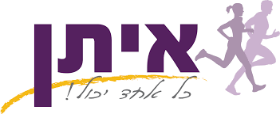

מרוץ איתן הוא מרוץ התרומה לקהילה ה4 שלנו
כול שנה קהילת הרצים שלנו בוחרת עומתה וכלל ההכנסות של המרוץ נתרמות לעמותה שנבחרה
השנה ברוח הספורטיביות החלטתנו לבחור בעמותת איתן
איתן – כל אחד יכול: ארגון חברתי המעצים ומקדם אנשים עם יכולות מיוחדות (צרכים מיוחדים) באמצעות אימוני כושר מקצועיים בחברה הישראלית.
ובכך להוכיח שכול אחד יכול להתעסק בספורט
ניתן לקרוא יותר באתר העמותה באתר העמותה
ניתן לתרום למרוץ בקבוצת הפייבוקס הייעודית: PayBox
ניתן לתרום כל סכום וכול סכום יתקבל בברכה